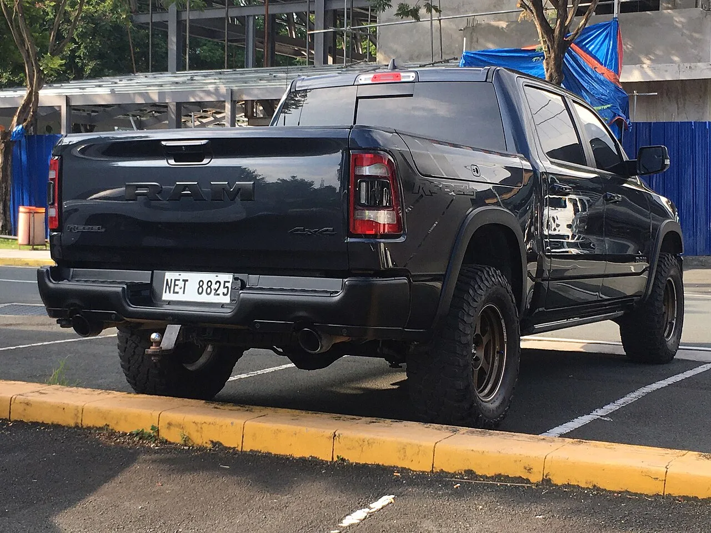
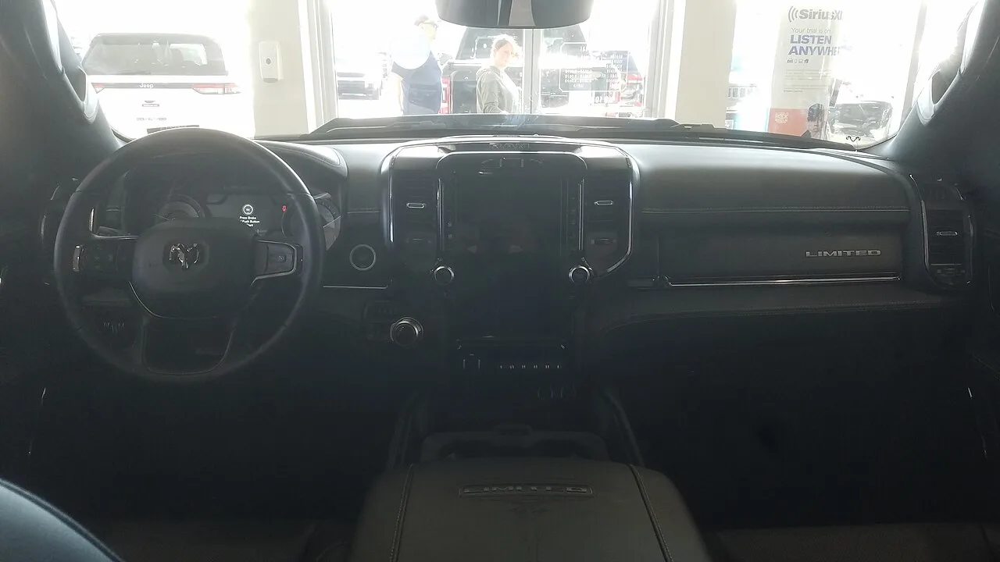

▲ 램 1500 — 2027 모델 연도부터 5.7L 헤미 V8에서 eTorque 마일드하이브리드 시스템이 제거되고 순수 내연기관 구성으로 돌아간다
전동화가 자동차 업계의 대세로 자리 잡은 요즘, 하이브리드 시스템을 '없앤다'는 소식은 흔치 않습니다. 그런데 픽업트럭 브랜드 램이 정확히 이 일을 하고 있습니다. 2027 모델 연도 초부터 5.7리터 헤미 V8에 강제로 적용해온 eTorque 마일드하이브리드 시스템을 제거하고, 순수 내연기관 구성으로 되돌리기로 한 것입니다. 그것도 소비자들의 요구에 따른 결정입니다.
1. 무엇이 사라지고, 무엇이 남나
이번 변경으로 사라지는 부품은 세 가지입니다. 벨트 구동식 모터-제너레이터, 48볼트 배터리팩, 그리고 신호 대기 등에서 엔진을 자동으로 멈췄다 켜는 자동 스탑-스타트 기능입니다. 반면 헤미의 정체성이라 할 수 있는 출력은 그대로 유지됩니다. 395마력과 410파운드-피트(약 56.6kg·m)의 토크는 변함이 없고, 경부하 주행 시 일부 실린더를 비활성화해 연비를 개선하는 다중변위시스템(MDS)도 계속 작동합니다. 즉 하이브리드 시스템만 걷어내고, 성능과 기본적인 연비 개선 기술은 그대로 남긴 셈입니다. 참고로 이번 변경은 5.7L 헤미에 한정된 이야기입니다. 최고 777마력을 내는 6.2L 슈퍼차저 헤미(헬켓 계열)는 이번 논의와 별개로 유지되며, 여기에 2027년에는 여러 출력 사양의 허리케인 트윈터보 인라인 6기통 엔진까지 라인업에 추가될 예정이어서, 램 1500의 파워트레인 선택지는 오히려 더 다양해지는 흐름입니다.
2. 왜 '없애는' 게 소비자를 만족시키나

▲ 램 1500 리벨 5.7 헤미 — 이런 전통적인 V8 트림을 선택하던 구매자들도 그동안은 원치 않아도 eTorque 마일드하이브리드를 함께 받아야 했다
이 변화의 배경을 이해하려면 지금까지의 상황을 먼저 봐야 합니다. 2026년형까지는 헤미 V8을 선택한 모든 구매자가 eTorque 마일드하이브리드 시스템을 예외 없이 함께 받아야 했습니다. 순수하고 전통적인 V8 경험을 원했던 픽업트럭 애호가들 입장에서는, 원치 않는 전동화 부품이 강제로 딸려오는 셈이었습니다. 램은 이런 불만을 받아들여, 이제는 하이브리드 버전과 순수 내연기관 버전을 소비자가 직접 선택할 수 있도록 다양한 선택지를 제공하는 방향으로 정책을 바꿨습니다.

▲ 램 1500 텅스텐 — 상위 트림 구매자들도 이번 조치로 하이브리드 여부를 직접 선택할 수 있게 됐다
3. 전환은 한 번에 이뤄지지 않는다
변화는 즉각적이지 않습니다. 초기 2027 모델 연도 생산에서는 하이브리드 버전과 순수 내연기관 버전이 한동안 병행 생산됩니다. 램의 스털링 하이츠 조립공장이 기존 구성으로 전환되는 과정에서, 일부 구매자는 여전히 eTorque 하이브리드 버전을 선택할 수 있는 상황입니다. 완전한 전환에는 다소 시간이 걸릴 것으로 보이며, 정확한 완료 시점은 아직 공식적으로 발표되지 않았습니다.

▲ 램 1500 실내 — 하이브리드 시스템 제거는 운전 경험이나 실내 구성에는 영향을 주지 않는다
4. 전동화 역행이 아니라 '선택지 확장'
이번 결정을 단순한 전동화 역행으로 해석하는 것은 정확하지 않습니다. 램은 이미 전기 픽업트럭 라인업도 별도로 준비하고 있어, 전동화 자체를 포기하는 것이 아니라 내연기관 트림의 선택지를 넓히는 쪽에 가깝습니다. 결국 이번 조치의 핵심은 "모두에게 하이브리드를 강제하지 않겠다"는 것이지, "하이브리드를 완전히 없애겠다"는 의미는 아닙니다. 소비자가 자신의 취향에 맞는 파워트레인을 고를 수 있게 됐다는 점이 가장 큰 변화입니다.
5. 아직 확인되지 않은 것들
전동화가 자동차 산업의 거스를 수 없는 흐름이라는 데는 이견이 없습니다. 하지만 이번 램의 사례는, 그 흐름 속에서도 "선택할 권리"를 원하는 소비자들의 목소리가 여전히 무시할 수 없는 변수라는 사실을 보여줍니다.